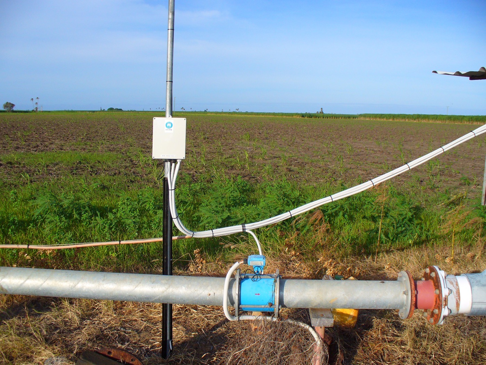

Executive Summary
수백만 행짜리 데이터셋의 품질을 실시간으로 점검하려면 전수 스캔은 너무 느립니다. 그래서 일부만 표본으로 뽑아 전체 품질을 추정하는데, 엔지니어의 직관은 대개 이렇게 말합니다. 스키마와 통계 구조를 아는 만큼 표본을 영리하게 골라야 무작위로 아무 행이나 집는 것보다 정확하지 않겠느냐고. 2026년 공개된 한 벤치마크가 이 직관을 9개 표집 전략으로 정면 검증했고, 결과는 정반대였습니다.
NYC 311 서비스 요청 50만 행을 5% 예산으로 점검했을 때, 단순 무작위 표집의 평균 상대오차는 0.49%였습니다. 반면 속성 의존성 그래프로 표본을 유도한 영리한 표집은 같은 조건에서 19.5%, 약 40배 더 틀렸습니다. 실제 행정 데이터 전반에서 격차는 11배에서 49배에 이르렀고, 프록시를 전혀 쓰지 않고 위치만 고르게 나눈 클러스터 표집은 무작위와 사실상 동률이었습니다. 승패를 가른 변수는 영리함이 아니라 대표성이었습니다.
그 40배는 두 갈래에서 옵니다. 하나는 영리한 표집이 수치형 이상치만 좇다가 품질 결함이 몰려 있는 범주형 컬럼을 통째로 놓치는 구조적 맹점이고, 다른 하나는 IoT 센서 데이터에서 이상치 추정치가 사실상 0으로 붕괴하는 더 심한 실패입니다. 실시간 데이터 품질 게이지를 설계하는 팀에게 이 결과는 하나의 질문으로 압축됩니다. 어디를 볼지 고르는 것과 고르게 보는 것 중 무엇이 먼저인가.
약 40배
무작위 표집의 정확도 우위
NYC 311 50만 행, 5% 예산 RU 0.49% vs DAG 19.5% 오차
5% · <1%
예산과 오차
50만 행 중 2.5만 행만 봐도 4개 지표 모두 1% 미만 오차
29.6% → 0%
IoT 이상치 추정 붕괴
영리한 표집은 100% 예산에서도 실제 결함을 거의 못 봄
12~47배
영리한 표집의 속도 손해
5M~741만 행으로 커질수록 무작위 대비 느려짐
수백만 행을 실시간으로 재려면
데이터 중심 AI 파이프라인에서 데이터 품질 프로파일링은 일종의 게이트입니다. 학습이나 서빙에 데이터를 넣기 전에 결측률, 중복률, 이상치율, 함수 종속성 위반율 같은 지표를 재서 문제가 있으면 막고 없으면 통과시킵니다. 문제는 속도입니다. 500만 행을 통째로 스캔해 이 지표들을 계산하면 단일 머신에서 수십 초에서 수 분이 걸립니다. 데이터가 매일 갱신되고 파이프라인이 수시로 돌아가는 환경에서, 이 비용은 실시간 모니터링을 가로막는 벽이 됩니다.
그래서 표준적인 대안이 점진적 표집(progressive sampling)입니다. 전체의 일부 비율, 곧 예산(budget)만큼만 표본을 뽑아 전체 품질을 추정하는 방식입니다. 5% 예산이면 500만 행 중 25만 행만 보고 나머지를 미룹니다. 관건은 "어떤 표집 전략이 정확도와 비용의 가장 좋은 균형을 내는가"입니다.
여기서 오래된 통념이 등장합니다. 아무 행이나 균등하게 뽑는 무작위 표집보다, 컬럼 사이의 상관관계나 스키마 구조를 활용해 "문제가 있을 법한 곳"을 우선 뽑는 영리한 표집이 더 정확하리라는 기대입니다. 품질 오류가 데이터 의존성을 따라 군집한다는 선행 연구의 직관이 이 기대를 뒷받침해 왔습니다. Laure Berti-Équille의 벤치마크는 이 통념을 9개 표집 전략에 대한 최초의 체계적 실측으로 검증합니다.
핵심 설정: 무작위·기하·야마네·클러스터 같은 대표성 기반 표집과, IQR 오류 프록시로 표본을 유도하는 DAG-MCMC·메트로폴리스·층화·중요도 표집을 같은 데이터, 같은 예산에서 겨루게 했습니다. 저울에 오른 질문은 하나입니다. 표본을 영리하게 고르는 것이 정말 이득인가.
9개 표집 전략의 정면 대결
벤치마크는 통제된 합성 데이터부터 실제 행정 데이터, IoT 센서 데이터까지 여덟 종을 썼습니다. 가장 선명한 장면은 뉴욕시 311 민원 데이터 50만 행에서 나옵니다. 예산 5%, 그러니까 2만 5천 행만 표본으로 뽑아 네 개 품질 지표를 추정했을 때, 무작위 표집의 평균 상대오차는 0.49%였습니다. 전수 스캔 대신 데이터의 5%만 봐도 1%가 채 안 되는 오차로 전체 품질을 맞힌 것입니다.
같은 데이터, 같은 5% 예산에서 DAG 유도 표집의 오차는 19.5%였습니다. 두 값의 차이가 약 40배입니다. 영리하게 고른 표본이 무작위 표본보다 40배 부정확했다는 뜻입니다. 이게 이 데이터셋만의 우연이 아니라는 점이 중요합니다. 실제 행정 데이터 전반에서 영리한 표집은 무작위 대비 11배에서 49배까지 나빴고, 이 격차는 부호순위검정에서 통계적으로 유의했습니다.
더 결정적인 비교 대상은 클러스터 표집입니다. 클러스터는 데이터를 √N개 블록으로 나눠 블록 단위로 무작위 추출할 뿐, 오류 프록시나 스키마를 전혀 쓰지 않습니다. 그런데 이 클러스터가 무작위와 거의 같은 정확도를 냈습니다. 프록시로 무장한 영리한 표집이 지고, 프록시 없이 위치만 고르게 나눈 표집이 이긴 것입니다. 정확도를 가른 변수가 영리함이 아니라 대표성이라는 결론이 여기서 나옵니다.
영리한 표집은 절반만 본다
왜 졌을까요. 핵심은 영리한 표집이 무엇을 보고 "문제가 있을 법한 곳"을 판단하느냐에 있습니다. DAG나 메트로폴리스 방식은 각 행에 오류 프록시 점수를 매기고 점수가 높은 행 쪽으로 표본을 편향시킵니다. 그런데 이 프록시는 수치 컬럼의 이상치(사분위 범위 밖 값)와 결측 비율만 봅니다. 위경도의 극단값, 금액의 급등 같은 것에는 반응하지만, 범주형이나 문자열 컬럼의 품질 결함은 구조적으로 보지 못합니다.
문제는 실제 데이터에서 결함이 어디 있느냐입니다. NYC 311, NYPD 체포 기록, UCI 인구조사 세 실데이터 모두 품질 결함이 주로 범주형과 문자열 컬럼에 몰려 있었습니다. 기관 코드가 빠지고, 상태값이 어긋나고, 분류 라벨이 뒤섞이는 식입니다. IQR 계열 프록시는 이런 결함을 태생적으로 못 봅니다. 그러니 영리한 표집은 정작 결함이 없는 수치 이상치 쪽으로 표본을 몰고, 결함이 실제로 있는 범주형 쪽은 텅 빈 채로 두는 것입니다.
층화 표집이나 중요도 표집도 같은 병을 앓습니다. 이들은 배분이나 가중치만 다르게 했을 뿐 같은 IQR 프록시를 쓰기 때문에, DAG나 메트로폴리스와 같은 실패 모드를 그대로 물려받습니다. 오직 클러스터만 프록시를 아예 안 써서 무작위 수준의 정확도를 지킵니다. 통제 실험도 원인을 못 박습니다. DAG의 그래프 제안은 그대로 두고 IQR 기반 가중치만 균등 가중치로 바꾸자, 오차가 19.5%에서 3.8%로 급락했습니다. 편향의 주범이 바로 그 프록시 가중치 단계였던 것입니다.
편향을 나중에 되돌리려는 장치마저 이 데이터에서는 배신합니다. 프록시 유도 표집은 표본을 뽑은 뒤 각 행에 프록시 점수의 역수를 가중치로 매겨 편향을 사후 보정합니다. 그런데 문자열이 많은 데이터에서는 대다수 행의 점수가 0 근처로 몰리고, 그 역수가 100만 배 규모까지 튀어 오릅니다. 상한을 씌워 잘라내도, 과하게 가중된 소수 행이 전체 추정치를 도로 끌고 가 버립니다. 영리하게 뽑은 표본을 다시 영리하게 바로잡으려다 보정 장치까지 같은 프록시의 맹점을 물려받는 셈입니다.
한 줄 관찰: 영리함의 대가는 편향입니다. 프록시가 데이터의 절반(수치형)만 보는 순간, 나머지 절반(범주형)에 몰린 진짜 결함은 표본에서 조용히 사라집니다. 품질 신호가 데이터 전반에 고르게 흩어져 있을 때, 고르게 보는 표집이 이기는 이유입니다.
IoT 데이터에서는 아예 붕괴한다
범주형 맹점은 첫 번째 함정입니다. 그런데 수치형이 지배하는 데이터에서는 실패 양상이 다르고, 더 심합니다. 인텔 버클리 연구소의 실제 IoT 센서 데이터 231만 행에서, 진짜 이상치율은 29.6%였습니다. 무작위 표집은 5% 예산에서 이 값을 0.3%포인트 이내로 맞혔습니다. 반면 DAG 유도 표집은 예산을 아무리 늘려도, 심지어 데이터의 100%를 봐도 이상치 추정치가 실제와 크게 어긋난 값에 고정됐습니다.

이유는 영리한 표집의 작동 방식 자체에 있습니다. DAG는 극단값 행에 표본을 집중시킵니다. 그러면 표본 안에서 사분위 경계(Q1, Q3)가 바깥으로 밀려나고, 표본의 IQR이 넓어집니다. IQR이 넓어지면 그 범위 밖으로 삐져나가는 행이 거의 없어지고, 표본 안에서는 아무것도 이상치로 잡히지 않습니다. 그 결과 실제 29.6%인 이상치율의 추정치가 사실상 0에 가깝게 붕괴합니다. 표본을 더 뽑는다고 고쳐지지 않습니다. 추정량 자체가 구조적으로 편향돼 있기 때문입니다.
가장 무서운 실패: 이건 단순히 덜 정확한 게 아닙니다. 실제 결함이 30%인데 추정치가 0%라면, 영리한 표집은 "이 데이터는 깨끗하다"는 완전히 틀린 답을 자신 있게 내놓습니다. 예지보전처럼 센서 이상을 놓치면 안 되는 현장에서, 이 자신만만한 오답은 덜 정확한 답보다 훨씬 위험합니다.
두 실패는 방향이 반대이지만 뿌리가 같습니다. 하나는 프록시가 못 보는 곳(범주형)에 결함이 있어서 놓치고, 다른 하나는 프록시가 집중한 곳(수치 극단값)이 오히려 추정량을 무너뜨려서 놓칩니다. 어느 쪽이든 편향된 표본이 대표성을 잃으면, 그 위에서 계산한 품질 추정치는 믿을 수 없게 됩니다.
어디를 볼까보다 고르게 보라
정확도만 문제가 아닙니다. 무작위 표집은 데이터가 커져도 계산량이 거의 선형으로 늘지만, DAG 유도 표집은 매 배치마다 후보 풀 전체를 다시 계산하느라 초선형으로 늘어납니다. 500만 행에서 무작위는 14.3초, DAG는 169초로 약 12배 느렸고, 741만 행 규모에서는 격차가 28배, 598만 행 택시 데이터에서는 47배까지 벌어졌습니다. 오류를 인위적으로 주입해도 무작위의 강건성이 약 5.6배 앞섰습니다. 느리고, 부정확하고, 덜 강건한 표집에 스키마 유지 비용까지 얹는 셈입니다.
실무의 결론은 담백합니다. 실시간 데이터 품질 게이지를 설계한다면, 스키마 메타데이터나 의존성 그래프를 공들여 쌓기 전에 무작위 또는 클러스터 표집을 5~10% 예산으로 먼저 세워 보는 것이 현재로선 가장 나은 출발점입니다. 데이터 소스가 이질적이고 스키마가 계속 바뀌는 실환경일수록, "어디를 볼까"를 정교하게 고르는 비용은 커지고 그 이득은 어떤 실데이터에서도 확인되지 않았습니다.
페블러스가 실시간 품질 모니터링에서 쌓아 온 관점과도 이 결과는 곧장 맞닿습니다. 드리프트 모니터링에서 1% 미만의 안정된 추정오차는, 결측률이나 중복률의 유의미한 변화만 골라 재학습을 트리거할 수 있게 해 줍니다. 반대로 추정치가 실행마다 몇 %포인트씩 흔들리면, 데이터가 멀쩡한데도 재학습이 헛돌고 컴퓨트가 낭비됩니다. 품질 게이지의 신뢰도는 정교한 표집이 아니라 대표성에서 온다는 것이 이 벤치마크의 실무 번역입니다.
Editor's Note: 저자는 정직하게 한계도 남깁니다. 강한 상관 구조를 가진 진짜 관계형 데이터나 지식 그래프에서는 결과가 달라질 여지가 있고, 이 부분은 아직 검정력이 부족합니다. 그러나 행정·센서스·IoT 정형 테이블이라는 넓은 실환경에서, 결론은 한 문장으로 압축됩니다. 어디를 볼지 영리하게 고르기 전에, 먼저 고르게 보라.
참고문헌
- 1.Berti-Équille, L. (2026). "Data Quality Profiling at Scale with Progressive Sampling: A Benchmark for Data-Centric AI Pipelines." arXiv:2607.25356.
- 2.Berti-Équille, L. (2026). "progressive-profiling." GitHub / Zenodo (DOI: 10.5281/zenodo.21628028). 9개 표집 전략과 데이터셋 재현 코드.
- 3.Intel Berkeley Research Lab. (2004). "Intel Berkeley Research Lab Sensor Data." 벤치마크의 IoT 실데이터(231만 판독값, 이상치율 29.6%).